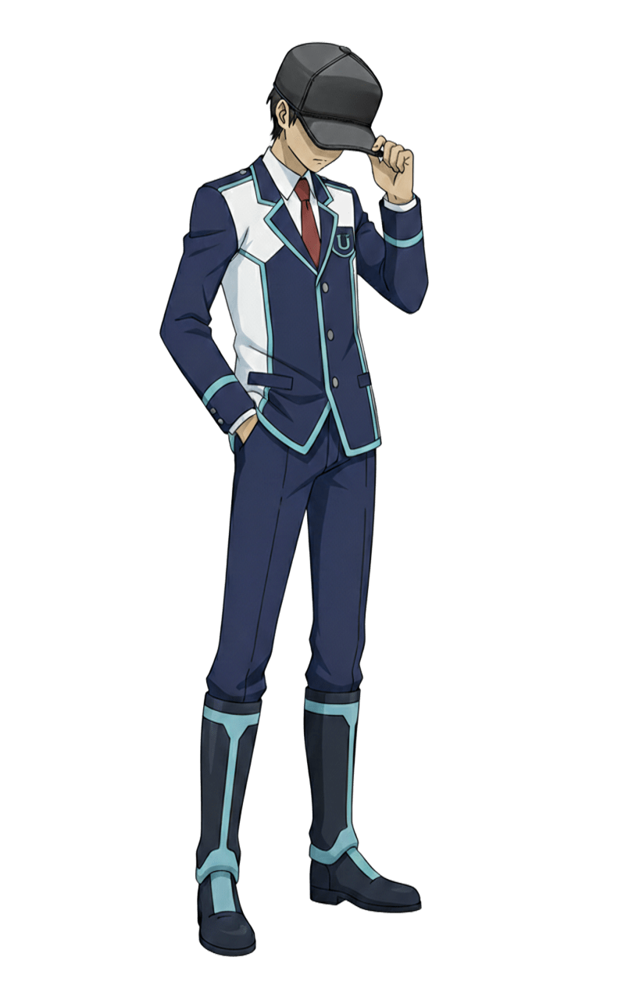
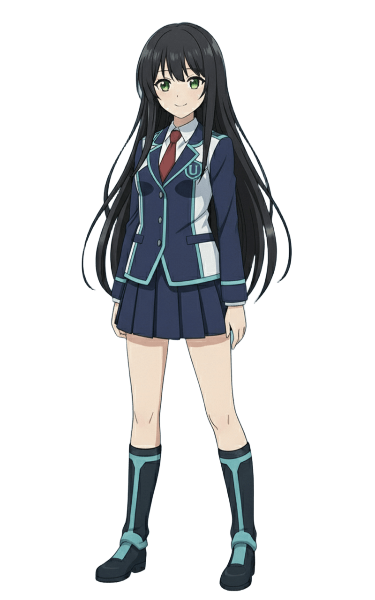
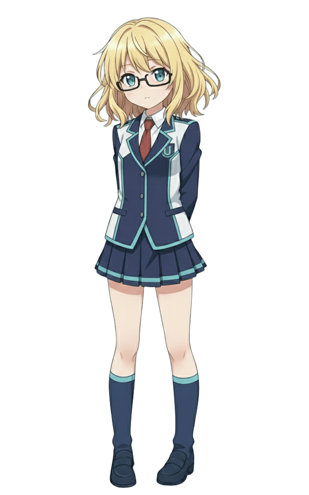
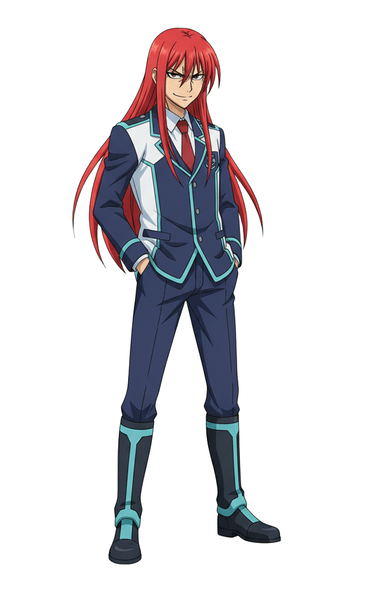
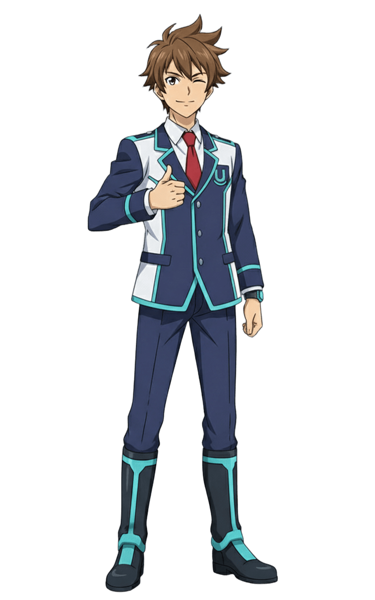
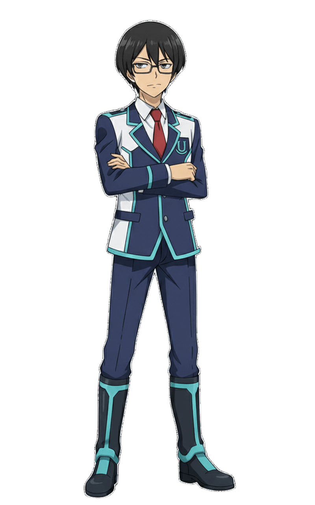

キャラクター
『HorizonNotes』の物語を彩る登場人物たちです。


主人公 (キミ)
アイデンティティ: 存在しないはずの101人目の生徒
主人公 (キミ)
アイデンティティ: 存在しないはずの101人目の生徒
年齢: 15歳
所属: 学園都市ウルティマ・トゥーレ
アイデンティティ: 存在しないはずの101人目の生徒
【失われた記憶と唯一の希望】
キミは、広大な宇宙を漂う学園都市「ウルティマ・トゥーレ」で目を覚ましました。
記憶は断片的で、辛うじて自分の名前と「15歳」という事実しか思い出せません。
手元に残されたのは見覚えのないHorizonNotesのデッキと、
キミの「相棒」となるアルカステラ「ポラリス」だけです。

常盤 マナ（Tokiwa Mana）
アイデンティティ: 正統な最後の生徒、生徒番号100番
「世界一を決める舞台で、あなたと戦う。それ以外に私には用がないから」
常盤 マナ（Tokiwa Mana）
アイデンティティ: 正統な最後の生徒、生徒番号100番
「世界一を決める舞台で、あなたと戦う。それ以外に私には用がないから」
年齢: 17歳
所属: 学園都市ウルティマ・トゥーレ
アイデンティティ: 正統な最後の生徒、生徒番号100番
【水星のバトラー】
学園都市ウルティマ・トゥーレに存在するはずの最後の生徒。
主人公が目覚めて最初に出会うステラバトラーです。
相棒とする水星のアルカステラ「マーキュリー」と共に、
アグロ（速攻）からコントロール（遅延）まで、
あらゆる戦術を使いこなす変幻自在のデッキを操ります。
【孤独な天才と強さの根源】
彼女は主人公に負けず劣らずの「ステラバトル廃人」であり、
日常生活や世界の危機には一切執着を見せません。
幼少期からの病弱さにより、
友達と遊ぶ機会がなかった彼女が誰よりも真摯に向き合ったのがステラバトルでした。
最強ステラバトラーのモナコ・ゴールド・フォレスト曰く、
彼女の強さの根源はたった一人で何百通りのデッキを作り、何千何万もの試合をシミュレートし続けた結果生まれた、
相手のすべてを見破る「無限の応用力」だと評しています。
その実力は確かなもので、世界大会「WCS（ワールド・チャンピオンシップ）」の予選を
全勝で勝ち抜いています。
【主人公との絆と約束】
彼女は主人公を一目見て、未来の偉大なステラバトラーになると直感。
ステラバトルの知識やウルティマ・トゥーレの構造など、様々な情報を主人公に授けます。
そして、世界の終焉が迫る中ステラバトラーの世界一を決めるWCSの決勝で相まみえるという、
二人の大切な約束を交わします。

モナコ・ゴールド・フォレスト (Monaco Gold Forest)
アイデンティティ: WCS連覇の伝説、生徒番号001番
「うん、分かってるよヴィーナス。この試合、勝とう。」
モナコ・ゴールド・フォレスト (Monaco Gold Forest)
アイデンティティ: WCS連覇の伝説、生徒番号001番
「うん、分かってるよヴィーナス。この試合、勝とう。」
年齢: 15歳
所属: 学園都市ウルティマ・トゥーレ
アイデンティティ: WCS連覇の伝説、生徒番号001番
【歴代最強のステラバトラー】
学園都市ウルティマ・トゥーレの最上層に位置する、最強の生徒でありステラバトラー。
史上最年少で世界大会「WCS（ワールド・チャンピオンシップ）」を連覇し、
プロランクの中でも最上位の「0等級」の頂点に立つ生ける伝説です。
【謎に包まれた絶対王者】
その実力と功績は誰もが認めるところですが、
ハンドルネームが「もなか」であるという事実を除き、彼女の素顔や素性を知る者は誰もいません。
彼女の正体は学園都市最大の謎の一つです。
相棒とするのは、優美さと強さを兼ね備えた金星のアルカステラ「ヴィーナス」。
主にコントロール（遅延）デッキを操り、
環境に応じた柔軟なデッキ構築能力もさることながら彼女が最強たる最大の要因は徹底的な相手の研究と対策にあります。
過去の戦績、構築、そしてプレイング傾向──あらゆる情報を収集し、
対戦相手のすべてを完全に掌握してからバトルに臨む、その完璧な姿勢こそが、彼女の力の源泉です。
【知られざる一面】
完璧な戦略家でありながら、極度の辛党という意外な一面を持ちます。
彼女の口に入るものには、どんな料理や飲み物であってもデスソースを欠かさないという逸話が、
秘密主義の彼女を物語る数少ない情報として知られています。

ソウル・アグロ・ナイトメア（Soul Agro Nightmare）
アイデンティティ: 最強のアグロデッカー、生徒番号002番
「オンナァあああああああ！！！！」
ソウル・アグロ・ナイトメア（Soul Agro Nightmare）
アイデンティティ: 最強のアグロデッカー、生徒番号002番
「オンナァあああああああ！！！！」
年齢: 15歳
所属: 学園都市ウルティマ・トゥーレ
アイデンティティ: 最強のアグロデッカー、生徒番号002番
【破壊と殺戮を好む最速のステラバトラー】
プロランク「0等級」において、モナコ・ゴールド・フォレストに匹敵すると目される実力者。
そのハンドルネームが示す通り、
相手に何もさせずに試合を終わらせる一方的な破壊と殺戮を好む生粋の「アグロデッカー」です。
彼の相棒は、一見温和で優しい冥王星のアルカステラ「プルート」。
彼は、プルートこそが他のすべてのアルカステラの中で最高の「アタッカー」であると強く信じており、
もし彼のアルカステラを侮辱するステラバトラーがいれば容赦なくその力でねじ伏せます。
【冷徹な合理性と裏腹の行動】
彼の凶暴なバトルスタイルとは裏腹に、そのプレイングは常に冷静で合理的です。
相手の盤面と自身のリソースを的確に計算し、最短ルートで相手を仕留めることを得意としています。
当初、素人同然の主人公に対してはその未熟さゆえに強い嫌悪感を示していました。
しかし、主人公が窮地に陥ると「勘違いするなよ」と捨て台詞を吐きながらも手を貸すのが、
もはや彼の「様式美」となっています。
冷たい外見の裏に、見えにくい形で仲間への気遣いを持つ複雑なキャラクターです。

片月 光（Katatsuki Hikaru）
アイデンティティ: 主人公の親友、生徒番号093番
「よう、親友！俺と一緒にちょっとそこまで世界を救いにいこうぜ！！」
片月 光（Katatsuki Hikaru）
アイデンティティ: 主人公の親友、生徒番号093番
「よう、親友！俺と一緒にちょっとそこまで世界を救いにいこうぜ！！」
年齢: 15歳
所属: 学園都市ウルティマ・トゥーレ
アイデンティティ: 主人公の親友、生徒番号093番
【最も身近なステラバトラー】
中級者の「3等級」に位置するステラバトラーであり、
学園都市ウルティマ・トゥーレに目覚めた主人公にとって初めてのクラスメイト、そして親友となる存在です。
記憶のない主人公と共に学園生活の多くの時間を過ごし、精神的な支えとなります。
【気難しい相棒とミッドレンジ戦術】
相棒は火星のアルカステラ「マーズ」。
気難しいマーズに尻に敷かれている姿をしばしば目撃されますが、
彼らの絆は本物です。
デッキタイプはミッドレンジ（中速）を得意とし、
マーズを丁寧に強化しながら徐々に盤面を制圧する堅実な戦術に長けています。
【閉鎖された学園からの脱出】
彼は学園都市ウルティマ・トゥーレからの脱出を最優先しています。
その目的は、閉鎖された世界の「外」にいる大切な妹の安否を確認するためです。
親友として主人公と行動を共にする裏で、
彼は学園都市の秘密、そして脱出の手段を密かに探り続けています。

初目 翔（Hatsume Shou）
アイデンティティ: 理論派の苦労人、生徒番号050番
「まったく、君たち二人こそがアンゴルモアなんじゃないか？」
初目 翔（Hatsume Shou）
アイデンティティ: 理論派の苦労人、生徒番号050番
「まったく、君たち二人こそがアンゴルモアなんじゃないか？」
年齢: 15歳
所属: 学園都市ウルティマ・トゥーレ
アイデンティティ: 理論派の苦労人、生徒番号050番
【理論と堅実のステラバトラー】
上級者の「2等級」に位置する、主人公のクラスメイト。
知的な理論派であり、堅実的なプレイングを好む冷静なステラバトラーです。
相棒は土星のアルカステラ「クロノス」。
ターン操作や相手の行動を妨害するメタビート戦術に長けており、常に合理的な判断を下します。
【三バカの良心】
当初、正体不明の転入生である主人公に対しては警戒心と敵対心を抱いていましたが、
次第にわだかまりが解けます。
今では、主人公や片月ヒカルの破天荒な行動にいつも頭を悩ませる
「三バカ」グループの常識人枠として、周囲の生徒たちに親しまれています。
【隠れた知識人】
冷静沈着な外面とは裏腹に恋愛ゲームの達人であり、筋金入りのアルカステラオタクという一面を持ちます。
アルカステラに関するイベントや交流の際、
その膨大な知識量から「最適解」の選択肢を瞬時に導き出すことができ、
主人公たちの冒険を陰から支える重要なブレインとなります。

城之古 亞鬼（Tatenokoshi Aki）
アイデンティティ: 心優しき巨人、生徒番号053番
「よ、よろしくお願いしますなんだな。」
製作者:syottare様
城之古 亞鬼（Tatenokoshi Aki）
アイデンティティ: 心優しき巨人、生徒番号053番
「よ、よろしくお願いしますなんだな。」
製作者:syottare様
作成者: syottare様
年齢: 18歳
所属: 学園都市ウルティマ・トゥーレ
アイデンティティ: 心優しき巨人、生徒番号053番
【忍耐と堅実のステラバトラー】
中級者の「3等級」に位置する、上級生。
一歩ずつ着実にフィールドを構築する、堅実なプレイングを好むステラバトラーです。
相棒は、木星の最大衛星にして太陽系最大の衛星がモチーフのアルカステラ「ガニメデ」です。
相手の行動を封じる「ロック戦術」と、ガニメデのレベルアップによる圧倒的な制圧力で勝利を掴みます。
【心優しき巨人】
巨躯と威圧的な容貌の持ち主ですが、性格は温厚そのもの。
人柄を知る親しい友人たちからは「あっきー」の愛称で呼ばれています。
【ガニメデと亞鬼】
相棒の「ガニメデ」は、幼少期にできた初めての「ともだち」です。
強面で友人ができなかった亞鬼と、素直になれず攻撃的だったガニメデ。
孤独だった一人と一柱は、ストレージの片隅で運命的な出会いを果たしました。
亞鬼が彼女を優しく受け入れて以来、二人はかけがえのない「親友」に。
今ではお互いの夢であるWCS優勝を誓い合い、日々切磋琢磨しています。
紗弥[しゃみ]（Shami）
アイデンティティ: 悟り（サトリ）とバズりの狭間で揺れる、電子の迷い猫、生徒番号010番
「仏の顔は三度まで。でもネコの顔はいつどの角度で見ても可愛い。」
製作者:釈迦の耳に念仏 様
紗弥[しゃみ]（Shami）
アイデンティティ: 悟り（サトリ）とバズりの狭間で揺れる、電子の迷い猫、生徒番号010番
「仏の顔は三度まで。でもネコの顔はいつどの角度で見ても可愛い。」
製作者:釈迦の耳に念仏 様
作成者: 釈迦の耳に念仏 様
年齢: 3.69歳（目標は369歳）
所属: 学園都市ウルティマ・トゥーレ
アイデンティティ: 悟り（サトリ）とバズりの狭間で揺れる、電子の迷い猫、生徒番号010番
【達観を目指す幼き修行僧】
プレイヤーランク「1等級」に位置する上級者で、3.69（みろく）年生（実質、留年）。
無限の徳（ライフ）をリソースに変える、不沈のライフゲイン戦術を得意とします。
相棒は、全天21星の一つをモチーフとした高位アルカステラ「カノープス」。
回復スペルやスキルで巧みに盤面を維持し、長期戦による精神的な駆け引き（削り合い）に持ち込みます。
【迷える信徒（フォロにゃ）を導く電子猫】
そんな彼女（あるいは彼？）は、VTuberとして電子の世界で「釈迦の耳に念仏（愛称は「しゃみ」）」という名で配信活動を行っています。
生きがいは、迷える信徒（フォロにゃ）たちと共に悟りの道を究めること。
（とはいえ、実は仏教徒というわけではありません。）
ステラバトラーたちの間では、テクニカルな戦術講座が人気を博す一方で、しゃみに人生相談を持ちかける人も多数。
真面目に答えようとするあまり、話が脱線してバトルの話題から離れてしまうこともしばしば。
そんな一面も含め、高い実力と愛嬌で多くの信徒（フォロにゃ）を抱える大物配信者です。
【しゃみとカノープス】
ある夜のこと。山奥の寺、仏像の前の祭壇（ここが一番Wifiの入りが良いのです）にルーターを置いて配信活動をしていたしゃみは、視聴者から奇妙な噂を耳にしました。
「中国のとある山奥に、幻のアルカステラのカードが祀られた場所があるらしい」
「これはバズる！」
好奇心と邪念に満ちたしゃみは、その日のうちに荷物をまとめ、単身、海を越えて噂の山奥へと飛び立ちました。
しかし、広大な山々の中からたった一枚のカードが見つかるはずもありません。
何日も、何日も山を彷徨い歩き、ついに食料も尽き、空腹と疲労でその場に倒れ込んでしまいました。
薄れゆく意識の中、しゃみの目の前に、燃えるような紅蓮の髪を持つアルカステラが揺らめき立ち、穏やかな声で問いかけます。
「……すべては泡沫（うたかた）の夢。
名声への執着も、肉体の苦痛も……手放してしまえば、そこにはただ、穏やかな静寂だけが残ります。
さあ、教えてください。
この満ち足りた『無』よりもなお、あなたが渇望するものはあるのですか？」
しゃみは、霞む視界でその赤い光を見つめ、声を絞り出します。
「……WCSの、優勝。
しゃみが欲しいのは、世界を手に入れた『完璧なバズり』にゃむ。
生まれた時からずっと、その景色に憧れていた。
世界中の人に祝福されて、世界が熱狂する……そんな最高の瞬間が、確かにそこにあるんだにゃむ。
しゃみは、あの頂きに立ちたい……！
その為には最高の相棒が……幻のアルカステラが必要なんだにゃむ！」
そのあまりに俗っぽく、けれど強烈な「生」への執着を聞いて、
カノープスはくすりと笑い、満足げに目を細めました。
「……ふふ。静寂よりも喧騒を、無よりも有を選ぶのですか。
いいでしょう。その尽きせぬ『煩悩』がどこまで続くのか……私が特等席で見届けてあげますよ」
暖かな光がしゃみを包み込み、意識はホワイトアウトしていきました。
……
…………
「……！」
遠くで呼ぶ声と、鼻を突く消毒液の匂いで、しゃみは目を覚ましました。
そこは中国の麓の病院のベッドの上。
倒れていたところを地元の村人に発見され、運ばれたようでした。
助かった……。安堵と共に視線を落とすと、点滴の管が繋がれた右手には、何かが強く握りしめられていました。
それは、燃えるような真っ赤な髪をした、美しいアルカステラのカードでした。